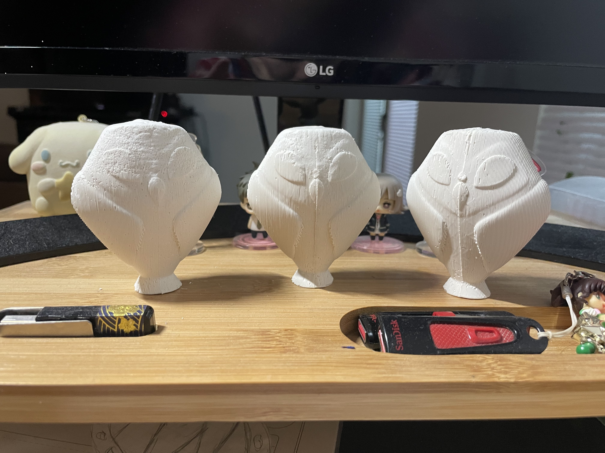
After printing my first 3D part of the mold I realized two things, 1. the box was way too big and 2. there was a ton of supports that the silicone would go through the hole at the bottom. Next step was to remake the model, but for whatever reason I didn't keep a copy of any of the previous steps. So, in a new file I imported the file I got from thingiverse again. Following the same steps as before I split the model, this time I created a cylinder to fill the hole, it took a lot of resizing so it would stay a closed mesh.
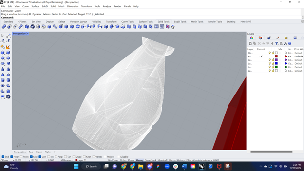
Next I remade the base, I realized that the air pocket I originally had wouldn't work and didn't need to be so big. I created a solid cone for the pouring, "booleanUnion"ed and then trimmed to fit as a half. I made two small cyliners and mirrored them to create small air pockets and used "booleanUnion" to combine it to the base. Next I used spheres instead of rectangles for the keys, I mirrored the first one and then the two to make all 4 even. I created a copy of the based and placed it 180 degrees against the top of the original and used "booleandifference" to create the indents. After moving that part back to the bottom I used "booleanunion" on the other piece with the spheres.
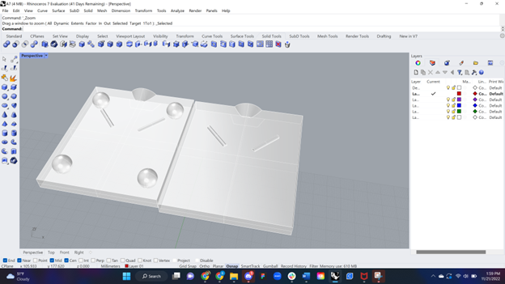 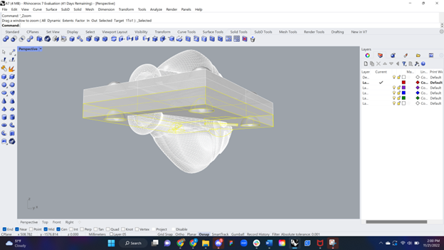
I then placed the half of the mesh I imported and edited in the middle. To make it even on the other side I used the "mirror" tool. To finalize the pieces I used "meshbooleanunion". Then I tested the model by creating negative space of each section in two cubes and moving them to fit together. This confirmed that the mold should create the shape I was looking for.
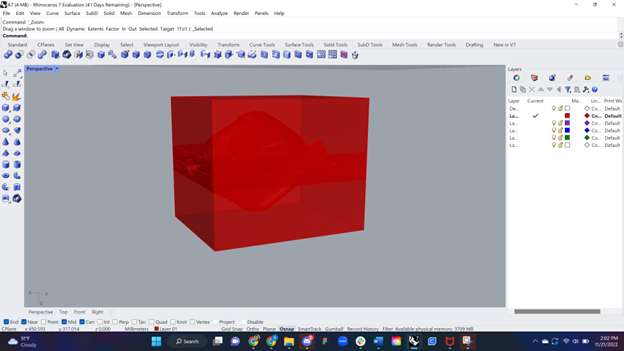 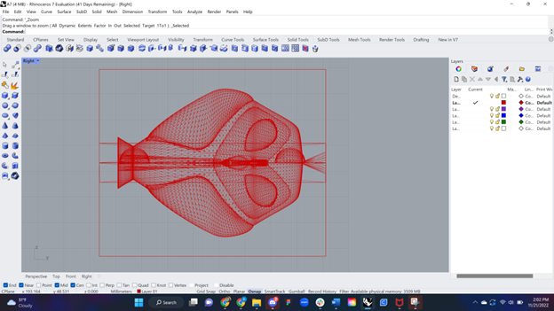
I used the same box as before but added a lip underneath based on Noelle's advice to make the mold easier to push out.
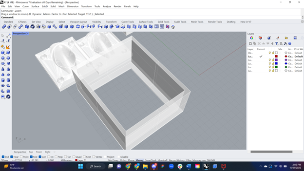
I was able to place all four pieces in one cura file and sent it to the 3D printer where it took 10 hours 55minutes and 24 seconds to print overnight.
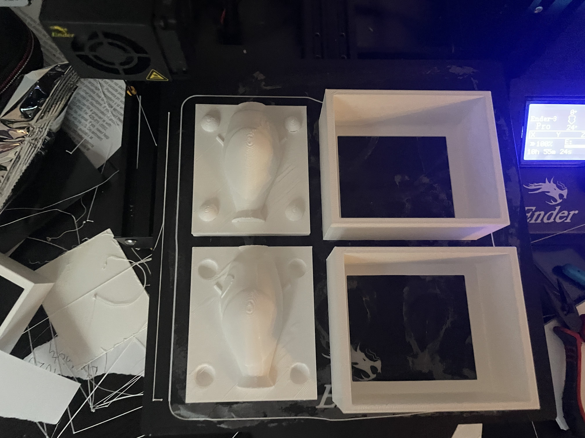 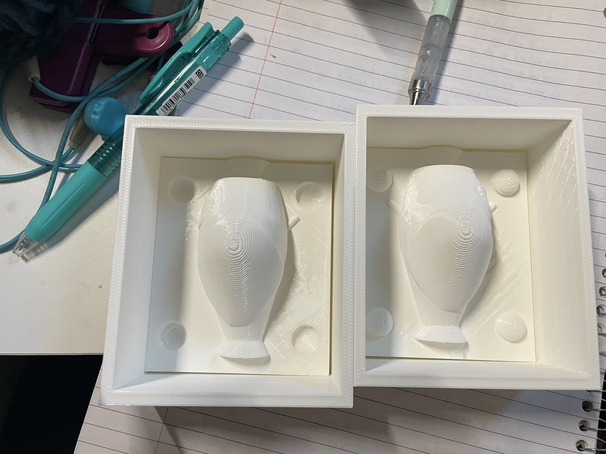
The next step was to create the silicone mold. I mixed the Oomoo and let the molds sit for about 9 hours to be absolutely sure they solidified. Next was the painstaking hour of getting it out of the 3D print, which I required help, I have weak arms... But I had the mold and it fit!
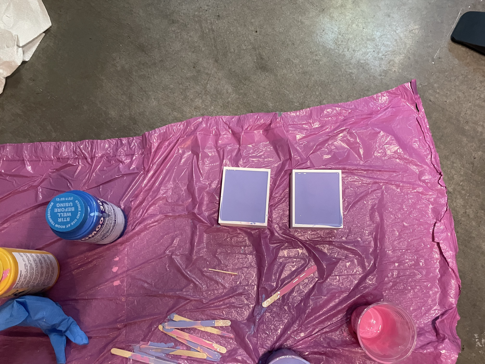 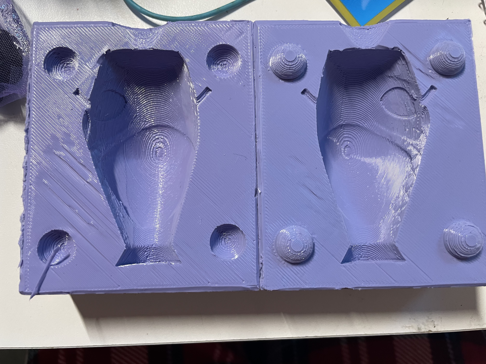
Because of time constraints I decided to use plaster I had left-over from a previous assignment. There were two main issues, 1. the spout of the mold and 2. working time. The spout was too small to have anything other than water really go through it, so with an excto-blade I opened the hole a bit. The second issue was that the plaster started to thicken significantly within a couple minutes.
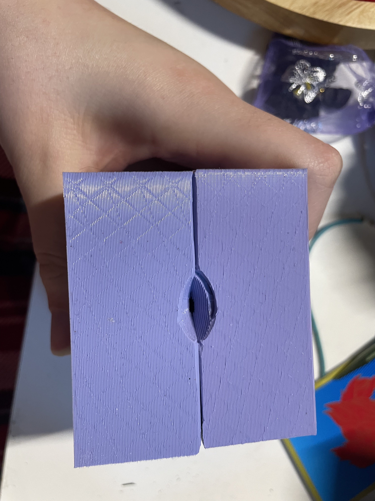 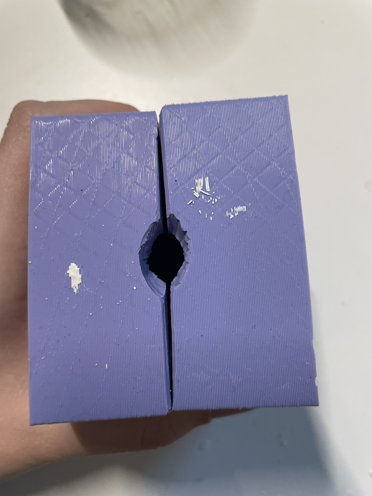
If I tried to remove bubbles it waas too late, so I borrowed a vacuum chamber from my s/o but I struggled using it and couldn't use it within the working time. In the end I just poured the plaster without removing all the bubbles, they didn't make a significant difference so I felt it was okay for this assignment. Below is the first attempt where the plaster thickened too fast and I couldn't get it through the hole.
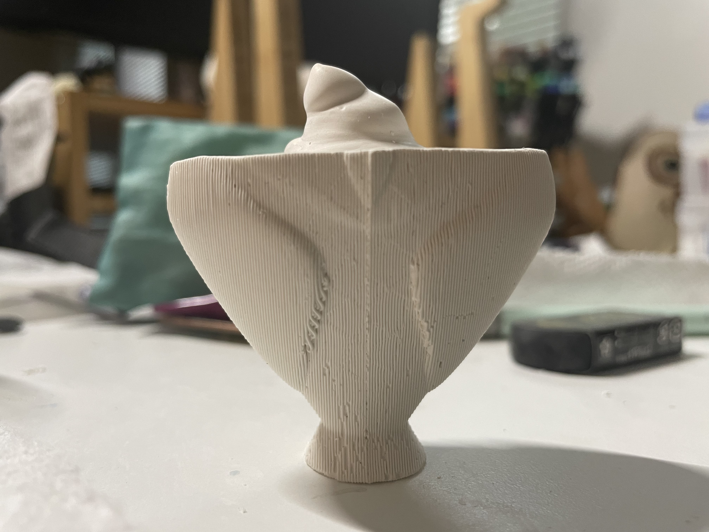
After a while here is my final result. Three little owlberts.
Documentation:
Mold 1 STL file Mold 2 STL file Mold Box STL file
Acknowledgements
My s/o (Peter) with helping me with demolding
Noelle for advice on modeling the box and clarification on air pockets.
And my friend Dana for helping me put this site together
Return to index